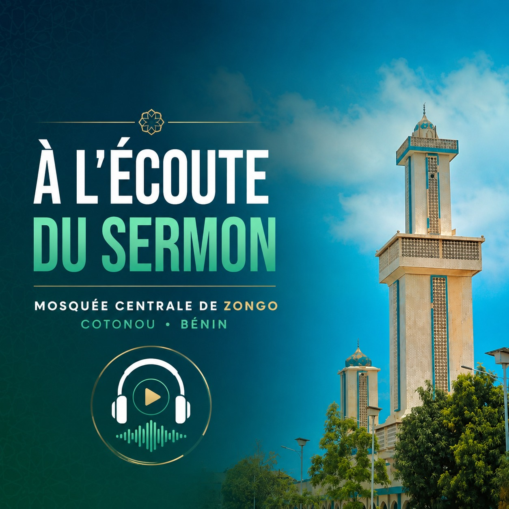

Sermon Audio du Vendredi 25 Septembre 2026 de la Mosquée Centrale de Zongo-Cotonou, Bénin
Thème :
La famille face au déluge des réseaux sociaux
Découvrez cet épisode consacré au thème : « La famille face au déluge des réseaux sociaux » ,
un rappel sur les défis du numérique et des réseaux sociaux, pour la famille et la jeunesse. Un appel aux parents à protéger la foi, l’identité et les valeurs de leurs enfants face aux influences du monde des réseaux sociaux.
🎧 Écoutez, méditez et partagez ce rappel bénéfique.

Partie 1 :
Partie 2 :